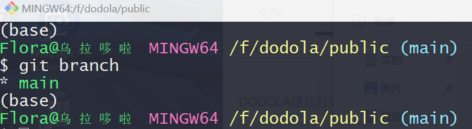
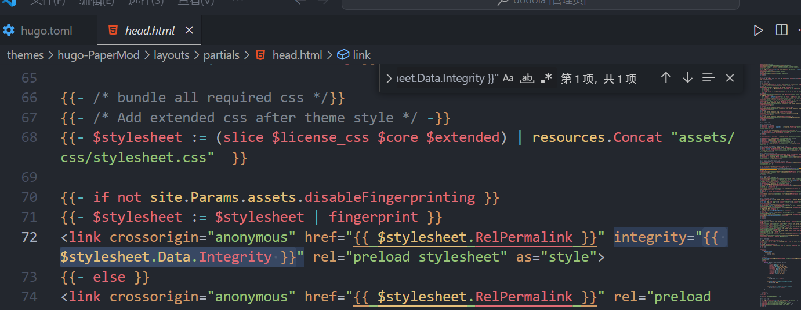

这部分记录的是个人网站的初步构建以及成功渲染到个人github Page的过程
使用环境
开发环境：Windows 11
Hugo版本：Hugo v0.114.0
Git版本： 2.43.0.windows.1
Theme：PaperMod
时间：2023/11/29
Github配合Git的基础使用
这部分我在网上找到一篇非常细致的文章，贴在这里：
手把手教你用git上传项目到GitHub（图文并茂，这一篇就够了），相信你一定能成功！！ - 知乎 (zhihu.com)
这篇文章虽是2020年的，但是步骤细致，跟着走下来不会有什么问题，有几个注意点如下：
- 由于一些原因，GitHub创建仓库后的默认分支从原来的Master更名为Main，但是许多其他教程还是习惯上使用Master做默认分支，同时，Git的默认分支似乎并没有同时更新成为Main，所以我们在进行push/pull等命令的时候要注意当期的branch是否合适，这里介绍了如何在Git中增加/切换/删除/合并分支等操作
- 有一些Github界面有更新，与教程中不太一致，但是只是位置不太一样，找的时候按照图中的名字寻找就行。
Git常用操作命令记录
git的分支管理
|
|
返回当前操作在哪个分支下，同时也可以得到当前项目下的其他分支的信息，该信息在git bash界面窗口也可以在最右侧小括号中得到

|
|
创建分支
|
|
切换分支到aimbranch
提交代码
|
|
远程分支名按照之前构建的关联填
选择静态博客框架hugo
Hugo的特点：
Hugo 是一个基于Go 语言的框架，可但中文文档和博客少，而且旧模板和新Hugo的兼容性也不好，它可以快速方便的创建自己的博客。
Hugo 支持Markdown 语法，我们可以将自己的文章写成Markdown 的格式，放在我们用Hugo 创建的博客系统中，从而展示给他人。
==HUGO中文文档==
|
|
Hugo安装
在Windows中安装：
1.首先安装choco包管理，需要在==管理员权限==下运行cmd，执行如下命令：
|
|
2.choco安装成功之后，我们就可以使用choco安装hugo：
|
|
3.检查是否安装成功：
|
|
4.MacOs和Linux中安装
|
|
创建站点
在想要设置站点的路径下，在命令行输入：
|
|
就可以创建一个名为blogsitename的站点
目录结构：
|
|
新建页面和文章
新建页面：
|
|
该文件会出现在./content/about.md
创建文章：
|
|
改文件会出现在./content/posts/myfirst.md
放在posts是为了方便聚合页面
这两个md文件中，要把draft一行去掉或者写成draft = false，draft的意思是草稿，在生成时不会出现。
三行线之间的内容会被hugo 解析，作为当前文章的一些属性。
更多关于文章的初始设置如下：
|
|
有的可能和我一样是这样的结构：title = "Myfirst"
下载主题
hugo特意没有给我们预设主题，所以我们去官网挑选一个主题吧
|
|
把终端的路径调整到博客文件夹的themes目录下，比如我选择的主题是PaperMod，我们在命令行输入如下：
|
|
然后在themes文件夹下会出现如下文件目录：
|
|
使用主题的方法：
先转到根目录下，再使用命令：
|
|
themename要和themes文件夹下的目标主题名字一致（如果是从git上下载再移动到themes目录下，可能会带有-master这样的后缀，因为一些奇怪的原因可能会对什么地方有影响，假如出现了这种情况把名字后的-master去掉就行）
之后在hugo.toml中修改：
|
|
预览主题
在根目录下使用命令：
|
|
此时生成的是静态文件，生成很快（这就是GO！），只要server不关就会一直监控文件变化，自动生成静态文件~~（不过要是由于编辑内容时因为自己过于抽象的代码行为而导致无法排错，重新开一次就行，不必管他~~
按照命令的反馈结果打开http://localhost:1313/就能看到本地预览啦
一些小工具
好用的yaml转toml工具
|
|
本地Hugo项目部署到Github Page
启动博客
前面预览主题的时候已经尝试过hugo了，这里（稍微）正式一点的提一下它吧。
在终端命令行直接输入下方内容就能在本地预览了，本地预览地址是：localhost:1313
|
|
输入hugo可以生成public文件夹，这个文件夹可以部署到云服务器或者托管到github上。
注意：输入hugo的生成方式只会往public文件夹里添加内容，但是不会删除外部已经不存在而public里面还存在的文件，所以一般还可以用下方第二条命令，这个命令可以保证每次生成的public都是全新的，会覆盖原来的。
|
|
新建仓库
-
在github上创建一个与
username同名的空仓库，命名格式必须是：username.github.io，不包含任何内容（readme.md也不要） -
在Hugo项目的public目录下（hugo后生成）中依次执行以下命令：
1 2 3 4 5git init # 初始化仓库 git remote add origin https://github.com/自己的/自己的.github.io.git git add . git commit -m "first commit" git push -u origin main -
之后的更新：
1 2 3 4git add . git status git commit -m "new post xxx" git push
使用GitHub Action自动发布文章
使用 main 分支发布文章，使用一个新的 source 分支进行写作，写作完成后上传 source ，GitHub Action 自动将 source 分支的 publish 文件夹拷贝到 main 分支，从而完成文章的发布。
这部分后补吧（嗯我想想…
印象深刻的bug
无法显示样式QAQ
控制台报错信息：
|
|
首先这一看就是链接路径报错，但是我寻思我也没改什么路径哇，只增减不查改的，所以这个可能是PaperMod当前版本中的一个问题，废话不多说，我们定位到这个bug：
路径：.\themes\hugo-PaperMod\layouts\partials\header.html
这个位置：

然后把integrity="{{ $stylesheet.Data.Integrity }}"改为integrity=""。
同时也可以在hugo.toml中加这一句：
|
|
报错消失，本地运行正常，挂载部署到github Page也是正常显示样式了。